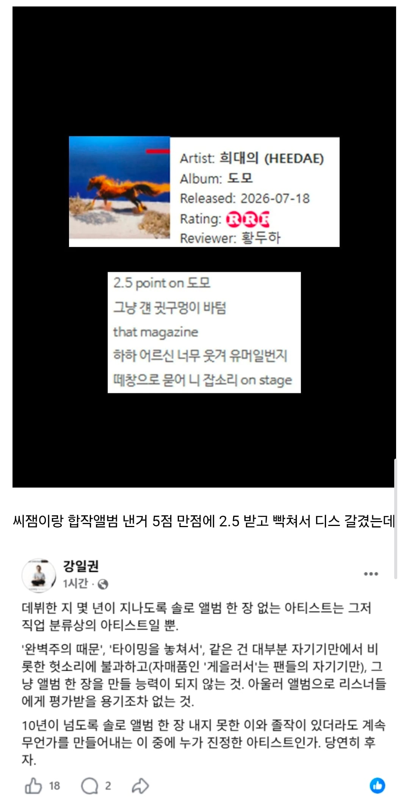

해당 편집장
"10년동안 자기 이름으로 낸 앨범 하나 없으면서 ㅋㅋㅋㅋ"

해당 편집장
"10년동안 자기 이름으로 낸 앨범 하나 없으면서 ㅋㅋㅋㅋ"
저 글을 보고도 아무타격 없이 다음 예능 준비하는 이영지면 개추
이영지랑은 이영지판 한끼줍쇼? 그 게스트 불러다 술먹는 예능하는거 나가서 한잔하면서 훌륭한 아티스트라고 칭송해줄듯 ㄹㅇㅋㅋㅋㅋㅋㅋ 근데 거기까지가 힙합임 사실
사실상 아마추어 우타이테나 다름없군
일베어 쓰던데 얘
까는거 참 좋아해 병신들ㅋㅋ
블랙넛한테 하는 말이누?
추천안함ㅋㅋㅋ
근데 솔로앨범으로 발표안하면 저평가받는 이유가 뭐임?
나는 솔직히 싱글 10곡 발표하나, 그 싱글 10곡 하나로 묶어서 앨범으로 발표하나 그게 그거 같은데ㅋㅋㅋ
lp는 돌판 아니고서야 어떤 컨셉이나 철학을 담아서 만드는게 대부분이기 때문
단순하게 2시간짜리 영화 감독이랑 10분짜리 단편영화 10편 만든 감독이랑 역량이 같진 않지
그 단편영화 10편 묶어서 내면 하나의 옴니버스 장편 영화가 된다 생각한다면 할 말 없긴 한데
음반도 보통 대주제와 구성을 갖고 만들기 때문에 그냥 10개의 개별 노래의 연속이 아니긴 함
덴마 완결 좆같이 낸 양영순이 아색기가 시절에는 문제 없엇던 것 같은 느낌이랄까
유투브에 10분짜리 영상 100편 vs 스크린에 걸린 영화 1편 의 차이임
너가 잘 몰라서 잘못 생각한거임
앨범은 그냥 여러곡을 묶어놓은게 아님
하나의 톤을 가지면서 자기복제는 아니어야하고 빠르게 느리게 흐름을 조절하면서 이어가는게 중요한거지
어떤트랙을 몇번에 넣을건지가지고 한참을 고민하기도 하고
완성도에 병적으로 집착하면 국카스텐처럼 1집을 두번만드는 짓이 나오기도 하지 ㅋㅋ
그건 국카 1집 드럼이 미디 였어서 그런거 아니었음? ㅋㅋㅋ
트랙리스트도 뒤집어져서 그거도 고침ㅋㅋ
그리고 락밴드 앨범에 미디드럼 쓰는건 딱히 욕먹을짓도 아니라서
드럼녹음 잘못하면 미디만도 못한소리나니까 ㅋㅋ
근데 왜 난 고치기 전이 좋지....
ㅋㅋ
저인간 주제도 모르고 아직도 저러고다니넼ㅋㅋ
이새끼 앨범안내는건 좃같긴해
가수인데 앨범없으면 뭘로 평가함? 싱글하나 피처링 이런걸로 어떻게 판단하란거임? 일반인들 중 노래 잘하는 사람들 널리고 널렸고 커버곡 올리는 사람 중에 직업이 가수가 아닌 사람도 널리고 널렸는데 가수로써 평가 받고 싶으면 최소 자기 주제있는 EP라도 내고 평가 받아야지
근데 싱글이면 온전히 자기 노래 아님? 그걸로 평가하면 되잔아
독서실에간다고 엄마한테뻥치고 나서돈을좀받고
금요일밤
똥반내고 명반호소하는 저스디스보다 앨범 한장없는 블랙넛이 나음
앨범내고 아다되기 vs 앨범없이 후다되기
돈까스도 블랙넛 앨범한장없다고 욕하자나 ㅋㅋㅋ
일권씨 힙합퍼네ㅋㅋ
원히트 원더 가수가 있기도 하지만 블랙넛은 원히트 원더 수준도 아니잖아? 앨범도 없고 이거다 하는 오리지널 곡도 없는게 가수긴 하냐 ㅋㅋㅋ
'힙찔이'
역시 어른은 다르네. 이젠 슬슬 Black cunt 로 바꿔야할듯
리드머 2.5면 개혹평도 아니구만 뭐
가수 앨범 전체를 처음부터 끝까지 스킵없이 들은게 마지막으로 언제인지 이젠 기억도 안나네.
난 최근에 신인류 밴드 앨범이 상 받았다길래 들었는데 한번에 연속해서 다 들음 ㅋㅋㅋ 상 받을만 하더라
나도 잘 안듣는데, 가끔 딱 맞는 명반이 있음. 최근에는 반타01 아름8, 바이스벌사 :D
고막 내구도 아직 괜찮으면 비와이 팝이크 들어보고
창모 이번에 낸 모노리스도 괜찮음
잘하는영역의 차이가 발생하는걸 인정하지않음에서 오는 괴리지 블랙넛은 충분히 잘하는래퍼고 가수임
앨범좀 못만들면 어때 싱글 잘내고 피쳐링 잘하잖아 굳이 앨범 있어야 래퍼고 가수임? 그걸 누가정하는데
언제부터 힙합이 눈치봣다고 그냥 하고싶은대로 하는거지
싱글은 정규커리어 아님 외전에 불과할뿐
앨범이 없어도 완성된 아티스트로 봐주는 리스너들이 많아진 시대가 온거지뭐 나는 개인적으로 뮤지션이라는 아티스트의 전통을 생각한다면 온전한 앨범을 내고 재량을 평가받는게 맞지않나 생각함
???: 앨범 내 이 씨발러마!
아이돌이 아티스트가 아니다라고 욕하는 부분도 같음.
아이돌이 정규 앨범 내도 평가가 박함.
대부분 앨범에 주제가 없고, 거의 싱글 짜깁기라 그럼.
근데 그 평가가 더 심한 랩 판에서 정규 하나 없다는건 그냥 조루 새끼랑 같음. 한 번 찍 싸고 끝나고 찍 싸고 끝내는거임.
블랙넛 앨범 안내는건 괘씸한데
강일권ㅋㅋㅋㅋㅋㅋㅋㅋㅋㅋㅋㅋㅋㅋㅋㅋㅋㅋㅋㅋㅋㅋㅋㅋㅋㅋㅋㅋㅋㅋㅋㅋㅋㅋㅋㅋㅋㅋㅋㅋ
암만 씨발 그래도 제리케이가 깔 레벨은 안되지ㅋㅋㅋㅋㅋㅋㅋㅋㅋ 랩이나 잘하라고
제 2의 션이슬로우 되는거지
이젠좆같아서 안기다림 변명킹
이쯤되면 블랙넛도 그냥 젊은날 도파민 넘칠때 지껄인 몇마디 벌스로 운좋게 쌓은 명성으로 연명하는 흔한 예술충 1로 봐도 됨. 평가받기 싫어하는 예술가는 이미 죽은거나 다름없음.
앨범 안내는 가수
작품 안하고 광고만 하는 배우호소인
2.5면 충분한거 아님?
8곡 채우는게 그렇게 어렵나